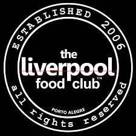

Bem-vindo ao Liverpool Restaurante!

Localizado no coração de Porto Alegre, o Liverpool oferece uma experiência gastronômica que combina a rica tradição da culinária brasileira com um toque moderno. Em um ambiente acolhedor e sofisticado, nossos clientes desfrutam de pratos cuidadosamente preparados, desde opções clássicas até delícias vegetarianas. Venha nos visitar e descubra sabores únicos que celebram o melhor da gastronomia local.